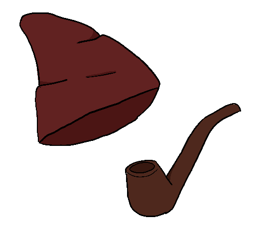

O Saci-Pererê nasce do broto de um bambu. É visto pulando pela floresta com uma perna só, tendo perdido a outra quando lutava capoeira, com um cachimbo na boca e um capuz vermelho. O Saci é uma criatura muito brincalhona, sempre pregando peças. Gosta de emaranhar o cabelo de animais de criação, invade casas perto da floresta para procurar doces e troca o sal pelo açúcar antes de ir embora. Quando alguém passa pelo seu território, segue a pessoa, a desorientando com sua risada e seu assovio que vem de todas as direções. Pode se camuflar como um redemoinho de vento quando anda, mas nessa forma pode ser capturado por uma garrafa e uma peneira. Só é preciso pular no redemoinho com a peneira e, quando ele estiver nela, tirar o seu gorro e colocá-lo na garrafa, fechando muito bem.